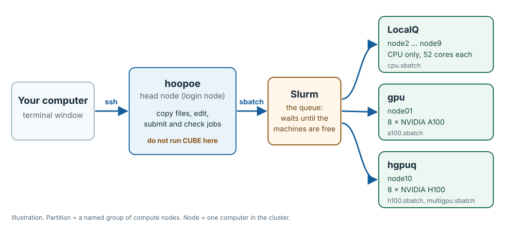
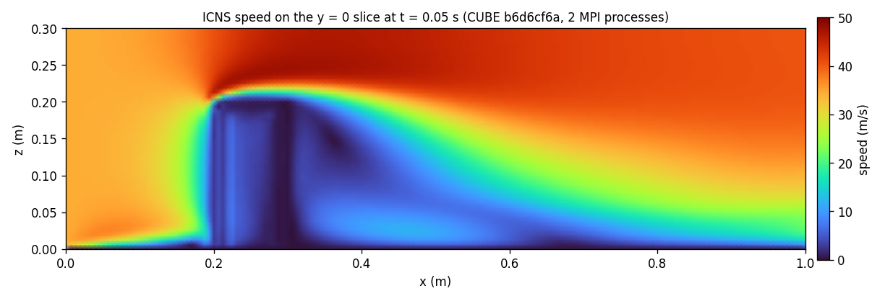

Steps in this guide
CUBE on a cluster
Running CUBE jobs
on hoopoe.
Log in, copy a ready example, hand it to the queue, and read the result. Every hoopoe command on this page has been run on hoopoe.
CUBE is already compiled and installed on hoopoe. You do not need the CUBE source code, and you do not compile anything. Each job script runs the shared cube program with a parameter file.
The example is the same as in the container guide: wind flowing past a cylinder that stands on the ground, at a Reynolds number of 200. The files and the parameters are identical, so you can run the same case on your laptop and on hoopoe.
A hoopoe account, a terminal window on your computer, and about 30 minutes. The first job takes about 4 minutes on 12 CPU cores, once it starts. GPU jobs may wait in the queue for much longer, because the GPUs are shared with other users.

What do “cluster”, “node”, “Slurm” and “job” mean?
- Cluster
- Many computers connected together. hoopoe is the name of the cluster and of its head node.
- Head node (login node)
- The computer you log in to. It is shared by everyone, so use it only to copy files, edit and submit jobs. Do not run simulations on it.
- Compute node
- A computer that runs jobs, such as
node3ornode10. You do not log in to it; Slurm starts your job there. - Slurm
- The program that manages the queue. It decides when and where each job runs, and keeps track of which cores and GPUs each job asked for.
- Job / job script
- A job is one piece of work that you give to Slurm. A job script is a text file that says which machines you need and which commands to run.
- Partition
- A named group of compute nodes with the same kind of hardware. hoopoe has three:
LocalQ,gpuandhgpuq. - MPI rank
- One copy of the CUBE program. CUBE splits the mesh between ranks, and the ranks work together.
Log in to hoopoe
hoopoe can be reached only from the local network. There is no VPN, so connect your computer to that network first. The organizer gives each student a user name and a password.
- Open a terminal window on your computer.
- Type the line below, with
YOUR-USERNAMEreplaced by the user name you were given, then press Enter.
ssh YOUR-USERNAME@10.24.6.154The first time you connect, ssh shows a “fingerprint” and asks whether to continue. A fingerprint is a short code that identifies the computer. Type yes only if the fingerprint matches hoopoe’s:
SHA256:Smv6iM81bE6DIvioQFnrBjcjcGbJjHQGJv/oWuuLpqYIf your ssh asks about an ECDSA key instead, hoopoe’s ECDSA fingerprint is SHA256:ul/QPR/X/1zwvh+mT8WNJ2cs0bl+UmHtQbUagrRKY60. If neither matches, stop and tell the organizer.
Then type your password and press Enter. The password stays invisible while you type it; that is normal.
YOUR-USERNAME@hoopoe:~$Every command from now on is typed in this window, on hoopoe. To log out at the end, type exit.
ssh says Connection timed out or Operation timed out
Your computer is not on the local network that can reach hoopoe. Connect to that network and try again.
Permission denied, please try again.
The user name or the password is wrong. Check both; user names are case-sensitive. After several failures, ask the organizer.
Know the machines
hoopoe has three partitions. You choose one in the job script.
| Partition | Nodes | Hardware | Longest job | Job script |
|---|---|---|---|---|
LocalQ | node2 … node9 | CPU only: 2 × Intel Xeon Gold 5320, 52 cores per node | no limit set | cpu.sbatch |
gpu | node01 | 8 × NVIDIA A100 | 2 days 12 hours | a100.sbatch |
hgpuq | node10 | 8 × NVIDIA H100 NVL | 2 days 12 hours | h100.sbatch, multigpu.sbatch |
To see the partitions and how busy they are, run:
sinfoPARTITION AVAIL TIMELIMIT NODES STATE NODELIST
LocalQ up infinite 3 mix node[2-3,9]
LocalQ up infinite 5 alloc node[4-8]
gpu* up 2-12:00:00 1 mix node01
hgpuq up 2-12:00:00 1 mix node10mix means that some cores or GPUs on the node are free. alloc means the node is full. idle means the node is completely free. The star after gpu* marks the default partition: a job that does not name a partition goes there.
To see how many GPUs on node10 are in use:
sinfo -p hgpuq -N -O NodeHost,StateLong,Gres,GresUsed:30HOSTNAMES STATE GRES GRES_USED
node10 mixed gpu:H100:8 gpu:H100:7(IDX:0-5,7)Here 7 of the 8 H100 GPUs are in use (IDX:0-5,7), so only GPU 6 is free. Use -p gpu to check the A100 node in the same way.
LocalQ for CPU runs, gpu or hgpuq for GPU runs.Copy the example to your home folder
The shared folder /storage/rahul-rcss/cube holds the CUBE installations and the example. It is read-only for you, so first copy the example to your own home folder. This command copies the cylinder example into a new folder called icns1:
cp -r /storage/rahul-rcss/cube/examples/cylinder ~/icns1Go into the new folder and list it:
cd ~/icns1
lsa100.sbatch cpu.sbatch cylinder.stl gpu_bind.sh h100.sbatch input_cns.toml input_icns.toml mesh_cylinder.bin multigpu.sbatch- input_icns.toml
- The parameter file for ICNS, the incompressible solver. It holds every setting of the simulation.
- input_cns.toml
- The parameter file for CNS, the compressible solver, for the same flow.
- mesh_cylinder.bin
- The mesh: 120 cubes of 16 × 16 × 16 cells, which is 491,520 cells.
- cylinder.stl
- The shape of the cylinder.
- *.sbatch, gpu_bind.sh
- The job scripts for step 4, and a helper for several GPUs (step 12).
The first four files are the same as in the cases folder of the container package.
run.log and the output_icns folder into the folder you submit from. A second job in the same folder overwrites the first one’s results. Copy the example again with a different name, such as ~/icns2, for another run.Choose a job script
Start with the CPU job: CPU nodes are usually available sooner than GPUs. The rest of this guide follows the choice you make here.
All four job scripts are already in your folder from step 3, so you do not copy anything. You can also open the script in your browser.
cpu.sbatch.Read the job script
A job script is a normal shell script with special comment lines at the top. Show it in your terminal with:
cat cpu.sbatchScript line What it means Lines starting with #SBATCH are requests to Slurm. Grey lines starting with # are comments.
#!/bin/bash -lRun the script with bash as a login shell, so that themodulecommand works.#SBATCH --job-name=cylinder-cpuA short name for the job. You see it in the queue.#SBATCH --partition=LocalQRun on the CPU nodes. Always name the partition: without it, a job goes to the A100 node.#SBATCH --nodes=1Use one compute node.#SBATCH --ntasks=12Start 12 MPI ranks.mpirunreads this number from$SLURM_NTASKS, so you change it only here.#SBATCH --time=00:30:00Longest run time, as hours:minutes:seconds. Slurm stops the job when it is reached. A shorter time can start sooner.#SBATCH --output=cpu-%j.logFile for the job's messages. Slurm replaces%jwith the job ID.# CUBE cylinder case on 12 CPU cores (MPI ranks) of one LocalQ node.# Submit from your copy of the example folder: sbatch cpu.sbatch# Compressible solver instead (CNS): sbatch cpu.sbatch input_cns.tomlmodule purge # start clean, even if you loaded other modules before sbatchUnload any modules that you loaded on the head node, so that every job starts the same way.module load openmpi-5.0.6Load the gfortran 11.4 compiler and Open MPI 5.0.6.export OMP_NUM_THREADS=1One thread per MPI rank.CUBE=/storage/rahul-rcss/cube/develop-b6d6cf6a-gcc11-cpu/bin/cubeThe ready-madecubeprogram from the shared CPU build. Nothing is compiled.INPUT=${1:-input_icns.toml} # the parameter file; input_icns.toml unless you name another oneThe parameter file. It isinput_icns.toml, unless you write another file name after the script name, as insbatch cpu.sbatch input_cns.toml.# hoopoe does not lock a job to its own cores, so do not let mpirun pin ranks to cores 0,1,2,...# (other jobs may be using them). --bind-to none lets Linux put each rank on a free core.echo "Started on $(hostname) with $INPUT at $(date)"Write the node, the parameter file, the time and (for GPU jobs) the GPU number into the job log.mpirun -np $SLURM_NTASKS --bind-to none $CUBE -p $INPUT > run.log 2>&1Run CUBE with the parameter file:cube -p $INPUT.--bind-to nonelets Linux put each rank on a free core, because hoopoe does not reserve cores for each job. CUBE's messages go torun.log.echo "Finished with exit code $? at $(date)"Write the exit code into the job log:0means success.tail -3 run.logCopy the last lines ofrun.loginto the job log.
#!/bin/bash -lRun the script with bash as a login shell, so that themodulecommand works.#SBATCH --job-name=cylinder-a100A short name for the job. You see it in the queue.#SBATCH --partition=gpuRun on node01, the A100 node.#SBATCH --nodes=1Use one compute node.#SBATCH --ntasks=1Start 1 MPI rank (one copy of CUBE).#SBATCH --cpus-per-task=4Reserve 4 CPU cores for each rank.#SBATCH --gres=gpu:1Reserve 1 GPU. A GPU job must have this line; without it, the job gets no GPU.#SBATCH --time=00:30:00Longest run time, as hours:minutes:seconds. Slurm stops the job when it is reached. A shorter time can start sooner.#SBATCH --output=a100-%j.logFile for the job's messages. Slurm replaces%jwith the job ID.# CUBE cylinder case on 1 A100 GPU (node01).# Submit from your copy of the example folder: sbatch a100.sbatch# Compressible solver instead (CNS): sbatch a100.sbatch input_cns.tomlmodule purge # start clean, even if you loaded other modules before sbatchUnload any modules that you loaded on the head node, so that every job starts the same way.module use /storage/rahul-rcss/nvhpc/modulefilesTellmodulewhere the shared NVIDIA HPC SDK is installed.module load nvhpc-hpcx-cuda12/26.11Load the NVIDIA HPC SDK 26.11 compilers, CUDA 12.9 and its MPI.export OMP_TARGET_OFFLOAD=MANDATORY # stop with an error if the GPU cannot be usedStop with an error if the GPU cannot be used, instead of quietly running on the CPU.export OMP_NUM_THREADS=1One thread per MPI rank.ulimit -s unlimited # the GPU build needs a large stackRemove the stack size limit. The GPU build needs a large stack.CUBE=/storage/rahul-rcss/cube/develop-b6d6cf6a-nvhpc26.11-gpu/bin/cubeThe ready-madecubeprogram from the shared GPU build. It contains code for both A100 and H100. Nothing is compiled.INPUT=${1:-input_icns.toml} # the parameter file; input_icns.toml unless you name another oneThe parameter file. It isinput_icns.toml, unless you write another file name after the script name, as insbatch cpu.sbatch input_cns.toml.echo "Started on $(hostname) with GPU $CUDA_VISIBLE_DEVICES and $INPUT at $(date)"Write the node, the parameter file, the time and (for GPU jobs) the GPU number into the job log.nvidia-smi --query-gpu=name --format=csv,noheader -i $CUDA_VISIBLE_DEVICESWrite the GPU model into the job log.mpirun -np 1 --bind-to none $CUBE -p $INPUT > run.log 2>&1Run CUBE with the parameter file:cube -p $INPUT.--bind-to nonelets Linux put each rank on a free core, because hoopoe does not reserve cores for each job. CUBE's messages go torun.log.echo "Finished with exit code $? at $(date)"Write the exit code into the job log:0means success.tail -3 run.logCopy the last lines ofrun.loginto the job log.
#!/bin/bashRun the script with bash. node10 has nomodulecommand, so a login shell is not needed.#SBATCH --job-name=cylinder-h100A short name for the job. You see it in the queue.#SBATCH --partition=hgpuqRun on node10, the H100 node.#SBATCH --nodes=1Use one compute node.#SBATCH --ntasks=1Start 1 MPI rank (one copy of CUBE).#SBATCH --cpus-per-task=4Reserve 4 CPU cores for each rank.#SBATCH --gres=gpu:1Reserve 1 GPU. A GPU job must have this line; without it, the job gets no GPU.#SBATCH --time=00:30:00Longest run time, as hours:minutes:seconds. Slurm stops the job when it is reached. A shorter time can start sooner.#SBATCH --output=h100-%j.logFile for the job's messages. Slurm replaces%jwith the job ID.# CUBE cylinder case on 1 H100 GPU (node10).# Submit from your copy of the example folder: sbatch h100.sbatch# Compressible solver instead (CNS): sbatch h100.sbatch input_cns.toml# node10 has no "module" command, so load the compiler with this file instead.source /storage/rahul-rcss/nvhpc/nvhpc-hpcx-cuda12-26.11.shLoad the same NVIDIA HPC SDK on node10, which has nomodulecommand.export OMP_TARGET_OFFLOAD=MANDATORYStop with an error if the GPU cannot be used, instead of quietly running on the CPU.export OMP_NUM_THREADS=1One thread per MPI rank.ulimit -s unlimitedRemove the stack size limit. The GPU build needs a large stack.CUBE=/storage/rahul-rcss/cube/develop-b6d6cf6a-nvhpc26.11-gpu/bin/cubeThe ready-madecubeprogram from the shared GPU build. It contains code for both A100 and H100. Nothing is compiled.INPUT=${1:-input_icns.toml}The parameter file. It isinput_icns.toml, unless you write another file name after the script name, as insbatch cpu.sbatch input_cns.toml.echo "Started on $(hostname) with GPU $CUDA_VISIBLE_DEVICES and $INPUT at $(date)"Write the node, the parameter file, the time and (for GPU jobs) the GPU number into the job log.nvidia-smi --query-gpu=name --format=csv,noheader -i $CUDA_VISIBLE_DEVICESWrite the GPU model into the job log.mpirun -np 1 --bind-to none $CUBE -p $INPUT > run.log 2>&1Run CUBE with the parameter file:cube -p $INPUT.--bind-to nonelets Linux put each rank on a free core, because hoopoe does not reserve cores for each job. CUBE's messages go torun.log.echo "Finished with exit code $? at $(date)"Write the exit code into the job log:0means success.tail -3 run.logCopy the last lines ofrun.loginto the job log.
#!/bin/bashRun the script with bash. node10 has nomodulecommand, so a login shell is not needed.#SBATCH --job-name=cylinder-2gpuA short name for the job. You see it in the queue.#SBATCH --partition=hgpuqRun on node10, the H100 node.#SBATCH --nodes=1Use one compute node.#SBATCH --ntasks=2Start 2 MPI ranks.mpirunreads this number from$SLURM_NTASKS, so you change it only here.#SBATCH --cpus-per-task=4Reserve 4 CPU cores for each rank.#SBATCH --gres=gpu:2Reserve 2 GPUs: one for each rank.#SBATCH --time=00:30:00Longest run time, as hours:minutes:seconds. Slurm stops the job when it is reached. A shorter time can start sooner.#SBATCH --output=multigpu-%j.logFile for the job's messages. Slurm replaces%jwith the job ID.# CUBE cylinder case with 2 MPI ranks on 2 H100 GPUs (node10): one rank per GPU.# To use 4 GPUs, change BOTH --ntasks and --gres to 4.# Submit from your copy of the example folder: sbatch multigpu.sbatchsource /storage/rahul-rcss/nvhpc/nvhpc-hpcx-cuda12-26.11.shLoad the same NVIDIA HPC SDK on node10, which has nomodulecommand.export OMP_TARGET_OFFLOAD=MANDATORYStop with an error if the GPU cannot be used, instead of quietly running on the CPU.export OMP_NUM_THREADS=1One thread per MPI rank.ulimit -s unlimitedRemove the stack size limit. The GPU build needs a large stack.CUBE=/storage/rahul-rcss/cube/develop-b6d6cf6a-nvhpc26.11-gpu/bin/cubeThe ready-madecubeprogram from the shared GPU build. It contains code for both A100 and H100. Nothing is compiled.INPUT=${1:-input_icns.toml}The parameter file. It isinput_icns.toml, unless you write another file name after the script name, as insbatch cpu.sbatch input_cns.toml.# CUBE does not choose a GPU for each rank, so gpu_bind.sh gives rank 0 the first GPU,# rank 1 the second GPU, and so on.BIND=/storage/rahul-rcss/cube/examples/cylinder/gpu_bind.shThe helper that gives each rank its own GPU (see step 12).echo "Started on $(hostname) with GPUs $CUDA_VISIBLE_DEVICES and $INPUT at $(date)"Write the node, the parameter file, the time and (for GPU jobs) the GPU number into the job log.mpirun -np $SLURM_NTASKS --bind-to none $BIND $CUBE -p $INPUT > run.log 2>&1Run CUBE with the parameter file, one rank per GPU throughgpu_bind.sh. CUBE's messages go torun.log.echo "Finished with exit code $? at $(date)"Write the exit code into the job log:0means success.tail -3 run.logCopy the last lines ofrun.loginto the job log.
#SBATCH lines say what to reserve, and everything below them runs on the compute node once the reservation starts.Submit the job
Make sure you are in the example folder, then hand the script to Slurm:
sbatch cpu.sbatchSubmitted batch job 15809The number is your job ID. Yours will be different.
sbatch returns at once. The job now waits in the queue and runs by itself; you can even log out.
cube or mpirun directly on the head node. The head node is shared by every user, and a simulation there slows down everyone. Always go through sbatch.Watch the queue
List your own jobs:
squeue -u $USER JOBID PARTITION NAME USER ST TIME NODES NODELIST(REASON)
15809 LocalQ cylinder rahul-rc R 0:18 1 node9
15810 gpu cylinder rahul-rc PD 0:00 1 (Priority)
15813 gpu cylinder rahul-rc PD 0:00 1 (Priority)
15811 hgpuq cylinder rahul-rc PD 0:00 1 (Priority)
15812 hgpuq cylinder rahul-rc PD 0:00 1 (Priority)The ST column shows the state: R = running, PD = pending (waiting). TIME is how long the job has been running. The last column shows the node, or why the job waits.
Why is my job waiting?
(Priority)- Other jobs are ahead of yours in the queue. Wait.
(Resources)- Your job is next, but the cores or GPUs it asked for are still in use. It starts when they become free.
(Dependency)- The job waits for another job to finish first. This happens only if it was submitted with
--dependency. - Any other reason
- Show every detail of the job with
scontrol show job 12345(your job ID), and send theReason=line to the organizer.
Ask Slurm when it expects your waiting jobs to start:
squeue -u $USER --start JOBID PARTITION NAME USER ST START_TIME NODES SCHEDNODES NODELIST(REASON)
15811 hgpuq cylinder rahul-rc PD 2026-11-24T17:48:00 1 node10 (Priority)
15812 hgpuq cylinder rahul-rc PD 2026-11-25T03:45:24 1 node10 (Priority)
15810 gpu cylinder rahul-rc PD 2026-11-25T22:39:51 1 (null) (Priority)
15813 gpu cylinder rahul-rc PD N/A 1 (null) (Priority)The start time is only an estimate. It moves earlier when other users’ jobs finish before their time limit. Here the jobs were submitted at 13:25, while other users held all 16 GPUs. Slurm expected the H100 job to start about 4 hours later, the 2-GPU job about 14 hours later, and the A100 job about 33 hours later. N/A means that Slurm has no estimate yet.
To follow a running job’s progress, show the end of CUBE’s log and keep it open. Press Ctrl + C to stop watching; the job keeps running.
tail -f run.logsqueue -u $USER.Check that the job finished
First read the job’s own log. The commands here use the job ID that you typed in step 6:
cat cpu-12345.logStarted on node9 with input_icns.toml at Tuesday 24 November 2026 01:26:13 PM IST
Finished with exit code 0 at Tuesday 24 November 2026 01:30:08 PM IST
elapse time = 234.46799999999999 (sec)
normal end.Output not captured yet: this job is still waiting in the queue.The two Loading lines come from module load. They are normal, not an error.
Output not captured yet: this job is still waiting in the queue.Output not captured yet: this job is still waiting in the queue.A good run says exit code 0 and ends with normal end. elapse time is CUBE’s own run time in seconds. The step-by-step progress is in run.log.
Ask Slurm how the job ended and how long it took:
sacct -j 12345 -X -o JobID,JobName,Partition,State,Elapsed,ExitCodeJobID JobName Partition State Elapsed ExitCode
------------ ---------- ---------- ---------- ---------- --------
15809 cylinder-+ LocalQ COMPLETED 00:03:55 0:0 COMPLETED and 0:0 mean success. A + at the end of a name means that sacct cut the name short. FAILED, TIMEOUT or CANCELLED mean the run did not finish; see Troubleshooting.
Optional: run the compressible example (CNS)
CNS uses its own parameter file and its own run folder. Write the CNS parameter file after the script name:
cp -r /storage/rahul-rcss/cube/examples/cylinder ~/cns1
cd ~/cns1
sbatch cpu.sbatch input_cns.tomlThis full example took about 6 minutes on 12 CPU cores in our test, because CNS needs 3333 smaller time steps. So far, CNS has been tested on hoopoe’s CPU nodes only. Its results are in output_cns.
exit code 0 and ends with normal end.Change one input and run again
You edit a normal text file ending in .toml. You do not edit or rebuild the CUBE program.
First make a new run folder, so that your first result stays safe:
cp -r /storage/rahul-rcss/cube/examples/cylinder ~/icns2
cd ~/icns2Now edit the copy with nano, a simple text editor on hoopoe:
nano input_icns.tomlFind the [time] section and change only T_end as shown below. Leave dt unchanged.
[time]
dt = 5.0e-5
T_end = 0.05[time]
dt = 5.0e-5
T_end = 0.005In nano, press Ctrl + O, then Enter to save, and Ctrl + X to leave. Then submit the job from the icns2 folder:
sbatch cpu.sbatchThis runs 100 steps instead of 1,000. Its final flow and force will differ from the full example, which is expected. The original file in /storage/rahul-rcss/cube/examples/cylinder stays unchanged.
Keep output folder names such as ./output_icns/ in their original form. For CNS, retain the positive density entry under [initial_condition].
Parameter guides
Every key in the .toml files is explained in three PDF guides for CUBE b6d6cf6a. Each row lists one key, its options and its default value.
- cube_params_common.pdf
- Keys used by both solvers, such as the mesh, the time step, the fluid and the output (9 pages).
- cube_params_icns.pdf
- Keys read only by the ICNS solver (5 pages).
- cube_params_cns.pdf
- Keys read only by the CNS solver (4 pages).
Open the guides on your own computer. The tutorial slides explain the main keys of this example.
icns2 run stops at step 100 and run.log ends with normal end.Find the results and open them in ParaView
The results are in your run folder on hoopoe, such as ~/icns1:
- run.log
- Solver progress and error messages, in the run’s main folder.
- …-12345.log
- The messages of the job script itself, from
--output. - output_icns/
- The results folder for ICNS. A CNS run writes
output_cns/instead. - mesh_plane1_y_… .xyz
- The mesh for the vertical slice through the cylinder, inside the results folder.
- field_plane1_y_… .q
- The corresponding flow data at different times.
Copy the slice to your computer
ParaView runs on your own computer, so first copy the results there. The whole output_icns folder is about 500 MB, so copy only the vertical slice through the cylinder, which is about 7 MB. Open a new terminal window on your computer, not on hoopoe, and type:
mkdir icns1-slice
scp 'YOUR-USERNAME@10.24.6.154:icns1/output_icns/*plane1_y*' icns1-slice/The quotes are needed, so that the * is read on hoopoe. The new folder icns1-slice is in the folder where you typed the command.
Install ParaView separately
Open ParaView’s official download page, select your operating system and processor, and install the application on your own computer.
Load the vertical slice
- Open ParaView, then choose File → Open.
- Browse to the icns1-slice folder. Select mesh_plane1_y_0.00000E+00.xyz and click OK or Open.
- If ParaView asks for a reader, choose the PLOT3D reader.
- In the reader’s Properties, enable Auto Detect Format. Use the property search field or advanced-properties gear if needed.
- Find Q File Name (the solution-file selection). Use its browse button to select the matching field_plane1_y_0.00000E+00_… .q files from the same folder. For one frame, choose the file with the largest step number.
- Click Apply. If the view is empty, click Reset Camera. Set the display representation to Surface if necessary.
- For this ICNS slice, choose Momentum in the coloring menu, then Magnitude. This raw array contains the velocity, so you are now looking at speed.

The reader was checked with ParaView 5.12. Labels and buttons can vary in other versions. If automatic format detection fails, show the organizer the mesh/solution filenames and your reader settings.
Check the force result numerically
For the unmodified full cases, the measured drag coefficients are 0.937563 (ICNS) and 1.558051 (CNS). Both values were identical with 1, 2 and 4 MPI processes in the container, and with 12 MPI ranks on hoopoe’s CPU nodes.
From inside an ICNS run folder on hoopoe, this command prints your value:
tail -1 output_icns/force_lsurf_001.txt | awk '{print ($3+$9)/14.20032}'For CNS, use output_cns/eval_lsurf_001.txt instead.
Columns 3 and 9 are fx_p and fx_m, the x-forces on the two sides of the cylinder surface, and their sum is the drag force. 14.20032 N is ½ ρ U² times the cylinder’s frontal area, 0.1 m × 0.2 m. A shortened practice run is not expected to reproduce a full-run drag value.
Change or cancel a job
Cancel a job
Cancel a waiting or running job with its ID. The command prints nothing when it works:
scancel 12345Cancel only your own jobs; Slurm refuses to cancel anyone else’s.
Use more CPU cores
The mesh has 120 cubes, and CUBE gives each rank a share of whole cubes, so choose a rank count that divides 120: 1, 2, 3, 4, 5, 6, 8, 10, 12, 15, 20, 24, 30, 40, 60 or 120. To run on 24 cores, edit the script with nano cpu.sbatch and change one line:
#SBATCH --ntasks=12#SBATCH --ntasks=24In nano, press Ctrl + O, then Enter to save, and Ctrl + X to leave. Submit again from a fresh copy of the example (step 3).
Override a request without editing
An option on the sbatch command line replaces the same #SBATCH line in the script, for that one job:
sbatch --ntasks=24 --time=01:00:00 cpu.sbatchUse several GPUs
On a GPU, run one MPI rank per GPU. multigpu.sbatch asks for 2 ranks and 2 GPUs on node10. To use 4 GPUs, change both lines to 4:
#SBATCH --ntasks=2
#SBATCH --gres=gpu:2#SBATCH --ntasks=4
#SBATCH --gres=gpu:4CUBE does not choose a GPU for each rank by itself. Without help, every rank would use the first GPU, and the others would sit idle. The helper script gpu_bind.sh gives rank 0 the first GPU that Slurm assigned to the job, rank 1 the second, and so on. multigpu.sbatch starts every rank through it:
#!/bin/bash
# Give each MPI rank on a node its own GPU from the list that Slurm assigned.
# Rank r gets GPU number (r mod number-of-GPUs).
IFS=, read -ra GPUS <<< "$CUDA_VISIBLE_DEVICES"
export CUDA_VISIBLE_DEVICES=${GPUS[$(( OMPI_COMM_WORLD_LOCAL_RANK % ${#GPUS[@]} ))]}
exec "$@"CUDA_VISIBLE_DEVICES yourself, and always ask for GPUs with --gres. On hoopoe, a job can see all 8 GPUs of its node, not only its own. Slurm tells the job which GPUs are yours through CUDA_VISIBLE_DEVICES. If you change that number, your job runs on another user’s GPU.The same method should work on the A100 node: use --partition=gpu, load the compiler as in a100.sbatch, and keep the gpu_bind.sh line. Several GPUs have been tested on node10 only.
Drone example (optional)
This extra example flies a small quadcopter drone with four rotors. Each rotor is modelled as spinning force lines, and the mesh moves with the drone. The drone is held still until 0.10 s, and then it flies freely until 0.30 s. It can move in x, y and z and turn in roll, pitch and yaw. This is a demo: the forces have not been compared with a real drone, so do not use the numbers for design. The drone example runs on the CPU nodes only.
- input_hover.toml
- All four rotors turn at the same speed, so the drone hovers and stays nearly still.
- input_roll.toml
- One rotor turns faster and the opposite rotor turns slower, so the drone tips sideways (rolls).
Copy the drone example
Each run gets its own folder, because a run overwrites the results in its folder. This command copies the drone example into a new folder called drone_hover:
cp -r /storage/rahul-rcss/cube/examples/drone ~/drone_hover
cd ~/drone_hoverRead the job script
The job script is the same as the cylinder's cpu.sbatch, except for the program, the parameter file and one mkdir line.
#!/bin/bash -lRun the script with bash as a login shell, so that themodulecommand works.#SBATCH --job-name=drone-cpuA short name for the job. You see it in the queue.#SBATCH --partition=LocalQRun on the CPU nodes. Always name the partition: without it, a job goes to the A100 node.#SBATCH --nodes=1Use one compute node.#SBATCH --ntasks=12Start 12 MPI ranks.mpirunreads this number from$SLURM_NTASKS, so you change it only here.#SBATCH --time=00:45:00Longest run time, as hours:minutes:seconds. Slurm stops the job when it is reached. A shorter time can start sooner.#SBATCH --output=cpu-%j.logFile for the job's messages. Slurm replaces%jwith the job ID.# CUBE drone example on 12 CPU cores (MPI ranks) of one LocalQ node.# Submit from your copy of the example folder: sbatch cpu.sbatch# Roll flight instead of the hover: sbatch cpu.sbatch input_roll.tomlmodule purge # start clean, even if you loaded other modules before sbatchUnload any modules that you loaded on the head node, so that every job starts the same way.module load openmpi-5.0.6Load the gfortran 11.4 compiler and Open MPI 5.0.6.export OMP_NUM_THREADS=1One thread per MPI rank.CUBE=/storage/rahul-rcss/cube/examples/drone/cube_droneThe ready-made drone program: CUBE plus the drone code, built against the shared CPU build. Nothing is compiled.INPUT=${1:-input_hover.toml} # the parameter file; input_hover.toml unless you name another oneThe parameter file. It isinput_hover.toml, unless you write another file name after the script name, as insbatch cpu.sbatch input_roll.toml.mkdir -p output # CUBE writes the drone history and the flow fields hereMake the folder where CUBE writes the drone history and the flow fields.# hoopoe does not lock a job to its own cores, so do not let mpirun pin ranks to cores 0,1,2,...# (other jobs may be using them). --bind-to none lets Linux put each rank on a free core.echo "Started on $(hostname) with $INPUT at $(date)"Write the node, the parameter file, the time and (for GPU jobs) the GPU number into the job log.mpirun -np $SLURM_NTASKS --bind-to none $CUBE -p $INPUT > run.log 2>&1Run CUBE with the parameter file:cube -p $INPUT.--bind-to nonelets Linux put each rank on a free core, because hoopoe does not reserve cores for each job. CUBE's messages go torun.log.echo "Finished with exit code $? at $(date)"Write the exit code into the job log:0means success.tail -3 run.logCopy the last lines ofrun.loginto the job log.
Run the hover
sbatch cpu.sbatchWatch the job with squeue -u $USER, as in step 7. The hover took about 9 minutes on 12 cores in our test. When the job has finished, read its log with cat cpu-12345.log, using your job ID.
Started on node9 with input_hover.toml at Thursday 26 November 2026 10:15:24 PM IST
Finished with exit code 0 at Thursday 26 November 2026 10:24:44 PM IST
elapse time = 559.43499999999995 (sec)
normal end.See where the drone went
sh drone_summary.shtime 0.3000 s
position x y z 0.42 0.34 -0.00 mm
speed vx vy vz 0.0053 0.0041 0.0013 m/s
roll pitch yaw -0.12 0.17 0.06 degThe drone moved less than half a millimetre and tilted less than 0.2 degrees, so it hovers.
The file output/drone_state.txt holds one line per time step: the time, position, speed, attitude, spin and air forces. Its first line names the columns. The 3D flow at the start and at the end is in output/mesh.xyz and the output/field_….q files, in the same PLOT3D format as in step 10.
Run the roll flight
The roll flight also took about 9 minutes on 12 cores in our test.
cp -r /storage/rahul-rcss/cube/examples/drone ~/drone_roll
cd ~/drone_roll
sbatch cpu.sbatch input_roll.tomlWhen the job has finished, run sh drone_summary.sh in ~/drone_roll.
time 0.3000 s
position x y z 0.28 -3.13 0.24 mm
speed vx vy vz 0.0036 -0.0633 0.0147 m/s
roll pitch yaw 5.57 0.30 0.12 degThe drone rolled by 5.6 degrees and drifted 3 mm toward −y.
Drone settings
The drone has its own [drone] table in input_hover.toml and input_roll.toml. The parameter guides do not cover this table, so it is explained here. All other tables, such as [time] and [fluid], work as described in those guides. The values below are those of the hover example.
- dof = 6
- How the drone may move after release: 0 = held in place, 3 = moves but does not turn, 6 = moves and turns.
- moving_frame = true
- The mesh travels with the drone but does not turn. Keep it
true, becausedof = 6was tested only this way. - release_time = 0.10
- Time in seconds when the drone is let go. Before this time, the drone is held still while the rotors start the flow.
- mass = 1.0
- Drone mass in kg.
- inertia = [0.00529179, 0.00529179, 0.01021179]
- Moments of inertia about the drone’s x, y and z axes, in kg m².
- gravity = [0.0, 0.0, -9.81]
- Gravity in m/s², pointing down the z axis.
- center_of_mass = [0.0, 0.0, 0.0]
- Where the drone’s centre of mass sits in the mesh, in metres. Only the origin was tested.
- rotor_speed = [439.0, 439.0, 439.0, 439.0]
- Spin speed of rotors 1 to 4, in rad/s. The roll example uses
[437.0, 445.0, 437.0, 429.0]. Change these four values to fly a different manoeuvre. - rotor_positions = [0.16, 0.00, 0.04, …]
- Position of each rotor hub from the centre of mass: 3 numbers per rotor (x, y, z in metres, along the drone’s axes). Rotor 1 is at +x, rotor 2 at +y, rotor 3 at −x and rotor 4 at −y.
- write_interval = 1
- Write one line to
output/drone_state.txtevery this many time steps.
rotors.inp holds the rotor design for the actuator lines: 4 rotors, 2 blades each, a radius of 0.1 m, the spin direction and a table of 21 blade sections. The number of rotors in this file must match the four values of rotor_speed.
The program also reads wind, start_velocity, start_angular_velocity and start_attitude_deg. These keys were not tested with non-zero values in a flow run, so leave them out. Keep the largest CFL number, the last column of run.log, at or below 0.34, because a larger value can make this moving-mesh case unstable.
Download GridGene
GridGene is the mesh generator for CUBE. It is a Windows program, so download it to your own computer and not to hoopoe. This download is available only for the workshop.
GridGene-20200127-workshop.zip
The ZIP is locked with a password. The organizers will give you the password during the workshop.
Open the ZIP with 7-Zip, because some built-in ZIP tools cannot open this type of encryption. Keep all the files in one folder, and then run BCM3D_GridGene.exe.
Cluster etiquette
- Use the head node only to copy, edit, build small things and submit. Run simulations with
sbatch. - Ask only for what you use: the GPU count in
--gres, the rank count in--ntasks, and a realistic--time. - Cancel jobs that you no longer need, including waiting ones.
- Results can be large. Delete old
output_icnsandoutput_cnsfolders that you do not need. - Do not edit files in
/storage/rahul-rcss. Copy them to your home folder first.
Troubleshooting
sbatch: error: Batch job submission failed: Invalid partition name specified
The partition name is misspelled. The names are case-sensitive: LocalQ, gpu, hgpuq.
run.log says *** ERROR: input_icns.toml does not exist. ***
The job was submitted from the wrong folder. Slurm runs the script in the folder where you typed sbatch, and CUBE looks for the parameter file, the mesh and the STL file there. Go to your copy of the example with cd ~/icns1, then submit again. The same message appears if the file name after the script name is misspelled.
The job log says module: command not found
The script is missing the -l in its first line, #!/bin/bash -l. On node10 (hgpuq) there is no module command at all; use the source …nvhpc-hpcx-cuda12-26.11.sh line from h100.sbatch instead.
The job log says No such file or directory for cube
The CUBE=… line in the job script is missing or misspelled. Copy the job script from the shared folder again.
A GPU job stops with device kernel image is invalid or “no GPU found”
Check that the script has --gres=gpu:1 (or more) and that you did not change CUDA_VISIBLE_DEVICES. The shared GPU program contains code for both the A100 and the H100.
The job is TIMEOUT
The job ran longer than --time. Increase it, for example --time=02:00:00, and submit again from a fresh folder.
The job waits for a very long time
Check squeue -u $USER --start and the free GPUs with sinfo -p hgpuq -N -O NodeHost,StateLong,Gres,GresUsed:30. Ask for fewer GPUs or a shorter --time, or use the CPU partition.
The results go missing or look mixed up
Two jobs ran in the same folder and overwrote each other’s output. Use one folder per job (step 3).
Still stuck? Send the organizer your job ID, the folder name, and the last 20 lines of the job log: tail -20 cpu-12345.log.
What does a setting in the .toml file mean?
Open the parameter guides in step 9. Find the table name in square brackets, such as [time], and then the key, such as T_end.
Command summary
| Command | What it does |
|---|---|
sinfo | Show the partitions and how busy they are |
sbatch job.sbatch | Submit a job script; prints the job ID |
squeue -u $USER | List your waiting and running jobs |
squeue -u $USER --start | Estimated start time of waiting jobs |
tail -f run.log | Follow CUBE’s progress (Ctrl + C to stop watching) |
sacct -j ID -X | How a finished job ended |
scontrol show job ID | Every detail of one job |
scancel ID | Cancel one of your jobs |